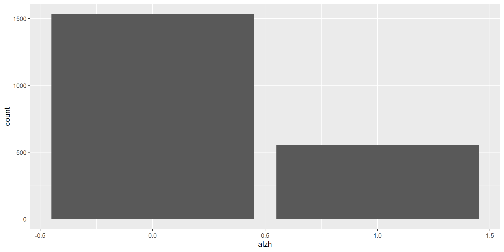
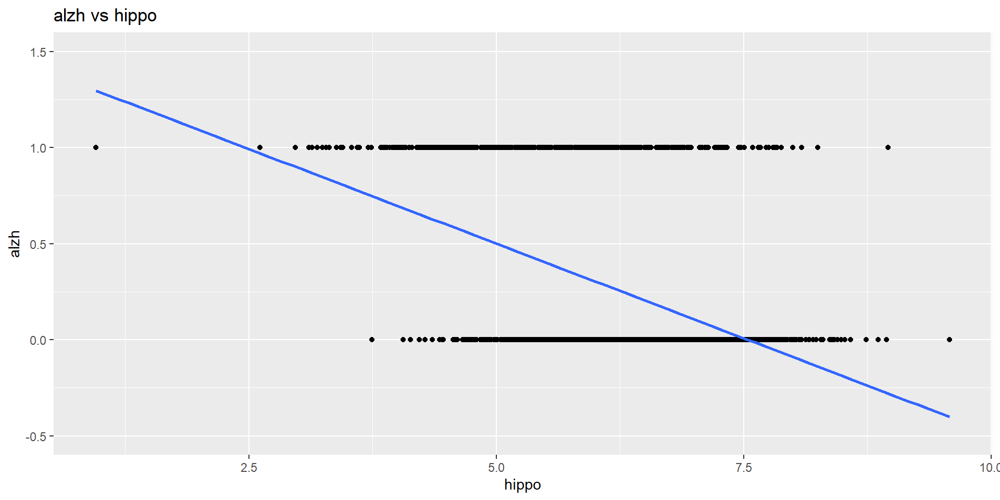
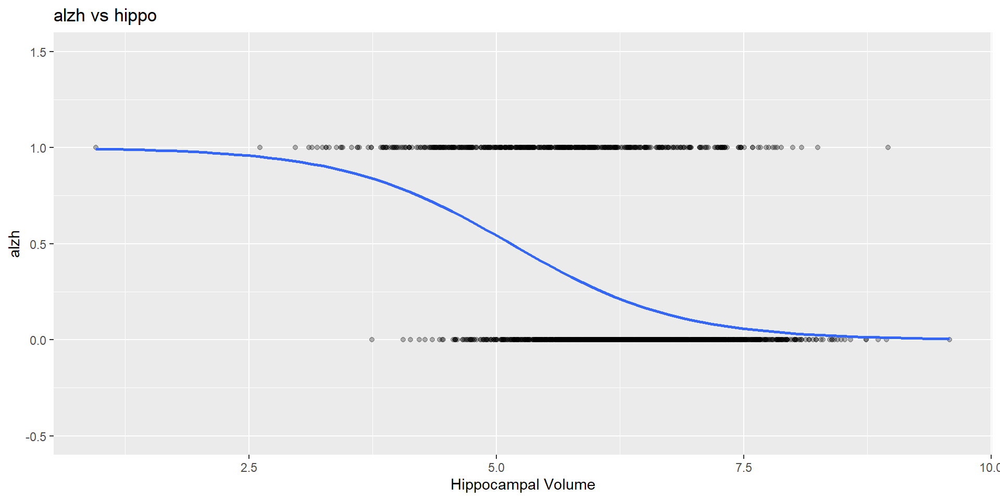
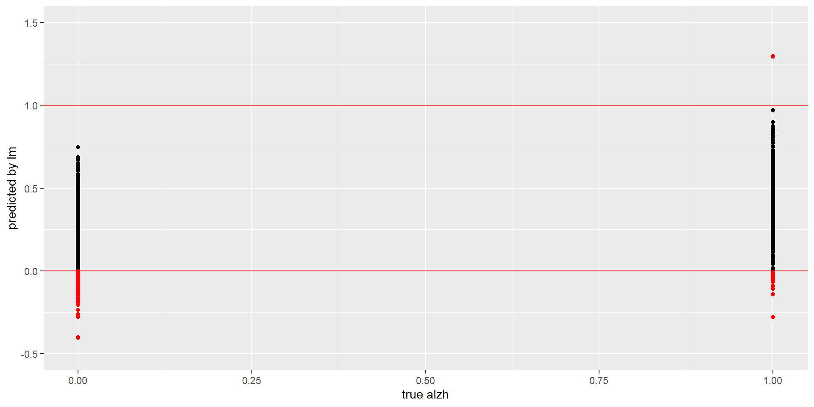
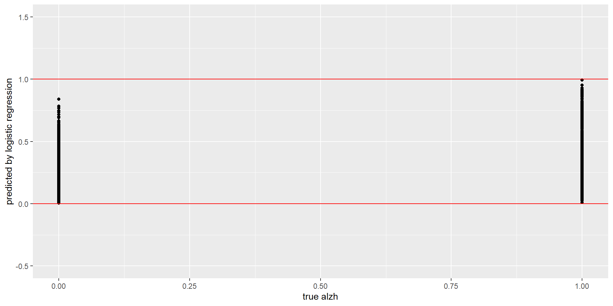
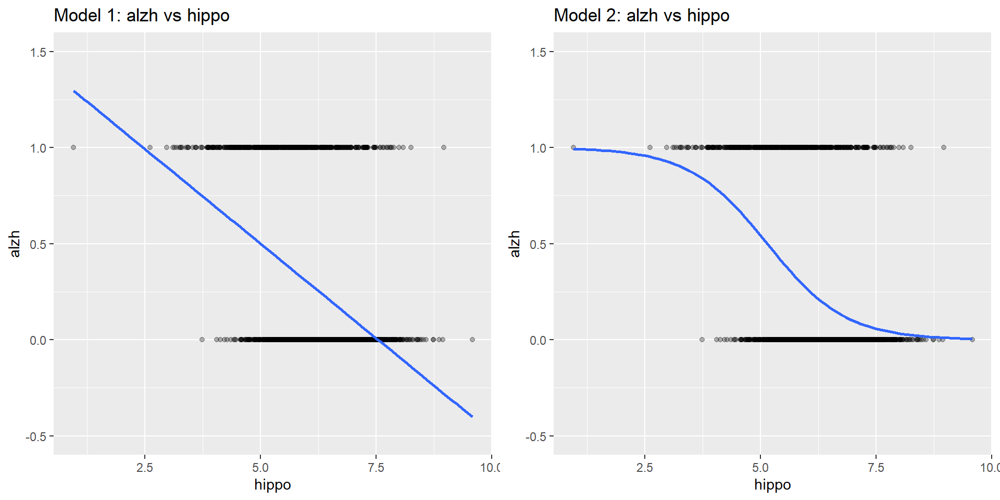
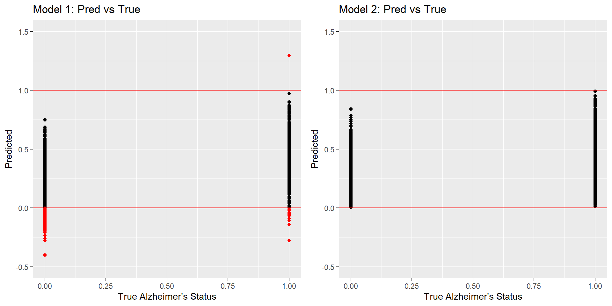
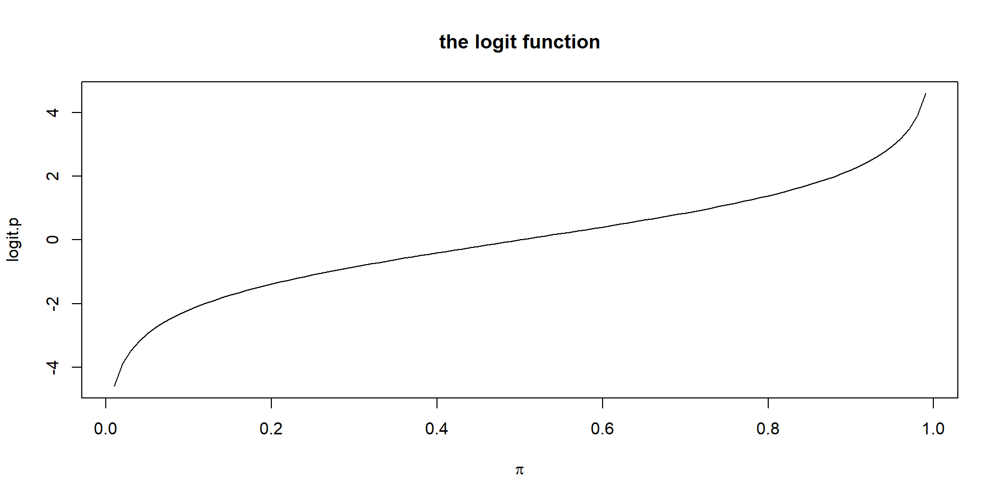
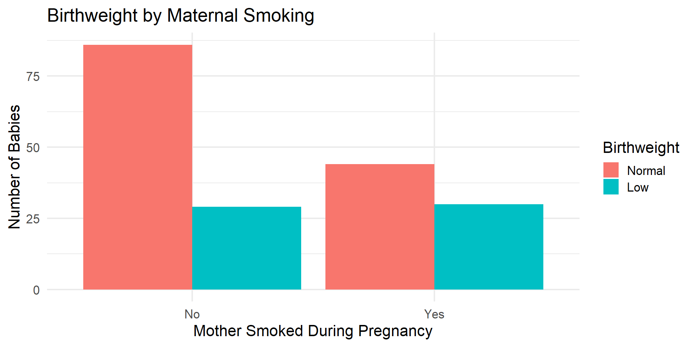

Logistic Regression
Zhaoxia Yu
#read, select variables
#remove impaired, and define new variables
alzheimer_data <- read.csv('../data/alzheimer_data.csv') %>%
select(id, diagnosis, age, educ, female, height, weight, lhippo, rhippo) %>%
filter(diagnosis!=1) %>%
mutate(alzh=(diagnosis>0)*1, female = as.factor(female), hippo=lhippo+rhippo)
table(alzheimer_data$alzh)
0 1
1534 553 
Here we are going to model a binary response variable alzh (Alzheimer’s disease status, 0 or 1).
The explanatory variable is hippo (hippocampal volume, a numerical variable).
We are going to look at two models (Model 1 vs Model 2)

ggplot(alzheimer_data, aes(x = hippo, y = alzh)) +
coord_cartesian(ylim = c(-0.5, 1.5)) +
geom_point(alpha = 0.3) +
stat_smooth(
method = "glm",
method.args = list(family = binomial),
se = FALSE
) +
labs(
# title = "Logistic Regression Fit",
title = "alzh vs hippo",
x = "Hippocampal Volume",
# y = "Probability of Alzheimer's")
y = "alzh")
…
alzh.lmalzh.lm=lm(alzh ~ hippo, data=alzheimer_data)
#add lm.pred variable
alzheimer_data$lm.pred=predict(alzh.lm)
#add red flags
alzheimer_data$lm.pred.red = alzheimer_data$lm.pred
alzheimer_data$lm.pred.red[alzheimer_data$lm.pred<1 &
alzheimer_data$lm.pred>0]=NA
ggplot(alzheimer_data) +
geom_point(aes(x=alzh, y=lm.pred)) +
coord_cartesian(ylim = c(-0.5, 1.5)) +
geom_point(aes(x=alzh, y=lm.pred.red), col="red") +
geom_hline(yintercept = c(0,1), col='red') +
labs(x="true alzh", y="predicted by lm")
alzh.logistic = glm(alzh ~ hippo,
data = alzheimer_data,
family = binomial)
# add predicted probabilities
alzheimer_data$glm.pred = predict(alzh.logistic,
type = "response")
ggplot(alzheimer_data) +
geom_point(aes(x = alzh, y = glm.pred)) +
coord_cartesian(ylim = c(-0.5, 1.5)) +
geom_hline(yintercept = c(0, 1), col = "red") +
labs(x = "true alzh",
y = "predicted by logistic regression")
alzh vs hippo Fitted Curveslibrary(gridExtra)
# Linear regression
p1 = ggplot(alzheimer_data, aes(x = hippo, y = alzh)) +
geom_point(alpha = 0.3) +
coord_cartesian(ylim = c(-0.5, 1.5)) +
geom_smooth(method = "lm", se = FALSE) +
labs(title = "Model 1: alzh vs hippo")
# Logistic regression
p2 = ggplot(alzheimer_data, aes(x = hippo, y = alzh)) +
geom_point(alpha = 0.3) +
coord_cartesian(ylim = c(-0.5, 1.5)) +
geom_smooth(
method = "glm",
method.args = list(family = binomial),
se = FALSE
) +
labs(title = "Model 2: alzh vs hippo")
grid.arrange(p1, p2, ncol = 2)
p1 = ggplot(alzheimer_data) +
geom_point(aes(x = alzh, y = lm.pred)) +
geom_point(aes(x = alzh, y = lm.pred.red), color = "red") +
coord_cartesian(ylim = c(-0.5, 1.5)) +
geom_hline(yintercept = c(0, 1), color = "red") +
labs(
title = "Model 1: Pred vs True",
x = "True Alzheimer's Status",
y = "Predicted"
)
p2 = ggplot(alzheimer_data) +
geom_point(aes(x = alzh, y = glm.pred)) +
coord_cartesian(ylim = c(-0.5, 1.5)) +
geom_hline(yintercept = c(0, 1), color = "red") +
labs(
title = "Model 2: Pred vs True",
x = "True Alzheimer's Status",
y = "Predicted"
)
grid.arrange(p1, p2, ncol = 2)
Model 1 is a linear regression model.
Model 2 is a logistic regression model.
Have you been convinced that the logistic regression model is more appropriate for modeling a binary response variable?
Recall that the response variable is binary (0 = Healthy, 1 = Alzheimer’s).
Predicted values can be impossible for a linear regression may be less than 0 or greater than 1, but probabilities must lie between 0 and 1.
Because \(Y\) is binary (0 or 1), it makes sense to model the probability that \(Y=1\).
Recall that for a binary response,
\[E(Y \mid x) = Pr(Y=1 \mid x) \in [0, 1].\]
\[logit(p)=log \left( \frac{p}{1-p}\right) \in [0,1].\]

\[logit(p(x)) = log\frac{p(x)}{1-p(x)}\]
\[ logit(p(x)) = \beta_0 + \beta_1 x \]
\[ P(Y=1 \mid x)= p(x)= \frac{e^{\beta_0+\beta_1x}} {1+e^{\beta_0+\beta_1x}}. \]
\[ odds(Y=1|x)\frac{P(Y=1 \mid x)} {1-P(Y=1 \mid x)}= \frac{p(x)}{1-p(x)}. \]
\[logit(p(x)) = log\frac{p(x)}{1-p(x)} = log[odds(Y=1|x)].\]
The odds ratio compares the odds for two different values of a predictor.
For a one-unit increase in \(x\), the odds ratio is
\[ \frac{odds(Y=1\mid x+1)} {odds(Y=1\mid x)}. \]
\[ logit(p(x)) = \beta_0+\beta_1x, \]
the odds ratio simplifies to
\[ \frac{odds(Y=1\mid x+1)} {odds(Y=1\mid x)} = e^{\beta_1}. \]
In this example, we want to investigate the relationship between having a low birthweight baby, \(Y\), and mother’s age at the time of pregnancy, \(X\).
In R, the glm() function can be used to fit a logistic regression model.
family='binomial' specifies that we are fitting a logistic regression model.
Note, glm stands for generalized linear models, which include linear regression and logistic regression as special situations.
\[ \operatorname{logit}(p(x)) = 0.385 -0.051x. \]
Estimate Std. Error z value Pr(>|z|)
(Intercept) 0.38458192 0.73212479 0.5252956 0.5993777
age -0.05115294 0.03151376 -1.6231937 0.1045480 2.5 % 97.5 %
(Intercept) -1.0503563 1.8195201
age -0.1129188 0.0106129Note
We have Interpretd the coefficient on the log-odds scale. Next, we’ll transform the coefficient to the odds ratio, which is much easier to understand.
The coefficient describes a change in log-odds.
It is common to take the exponential to convert the coefficient back to the odds scale.
Exponentiating the coefficient gives the odds ratio:
\[ e^{-0.051}=0.95. \]
\[\left(e^{-0.113},\ e^{0.011}\right) = (0.89,\ 1.01).\]
The odds ratio for comparing 21 year old mothers to 20 year old mothers is \[\begin{align*} \frac{\frac{\hat{p}_{21}}{1- \hat{p}_{21}}}{\frac{\hat{p}_{20}}{1- \hat{p}_{20}}} & = & \frac{ \exp(0.38) \exp(- 0.05 \times 21))}{ \exp(0.38) \exp(- 0.05 \times 20)}\\ & = & \exp(- 0.05 \times 21 + 0.05 \times 20)\\ & = & \exp(- 0.05) \end{align*}\]
Therefore, \(\exp(b_1)\) is the estimated odds ratio comparing 21 year old mothers to 20 year old mothers.
In this example, we model the relationship between binary variables:
The binary response variable low: low = 1 for low birthweight babies, and 0 otherwise.
The binary predictor smoke: smoke=1 for smoking during pregnancy, and 0 otherwise.
No Yes
Normal 86 44
Low 29 30
chisq.test can be used for testing whether they are associated.
A logistic regression provides more information
Estimate Std. Error z value Pr(>|z|)
(Intercept) -1.0870515 0.2147338 -5.062322 4.141802e-07
smokeYes 0.7040592 0.3196423 2.202647 2.761962e-02\[ \log\left(\frac{\hat p}{1-\hat p}\right) = -1.09 + 0.70x. \]
\[ \frac{\hat p}{1-\hat p} = \exp(-1.09+0.70x). \]
\[ \begin{aligned} \text{Odds}(x) &= \exp(\beta_0+\beta_1x),\\ \text{Odds}(x+1) &= \exp(\beta_0+\beta_1(x+1)). \end{aligned} \]
\[ \begin{aligned} \frac{\text{Odds}(x+1)} {\text{Odds}(x)} = \frac{\exp(\beta_0+\beta_1(x+1))} {\exp(\beta_0+\beta_1x)}= \exp(\beta_1). \end{aligned} \]
\[ \boxed{\text{Odds Ratio}=e^{\beta_1}.} \]
The estimated regression coefficient is \(b_1=0.70.\)
Therefore, the estimated odds ratio is
\[ e^{0.70}=2.01. \]
Including multiple explanatory variables (predictors) in a logistic regression model is easy.
Similar to linear regression models, we specify the model formula by entering the response variable on the left side of the “~” symbol and the explanatory variables (separated by “+” sings) on the right side.
Call: glm(formula = low ~ age + smoke, family = "binomial", data = birthwt)
Coefficients:
(Intercept) age smokeYes
0.06091 -0.04978 0.69185
Degrees of Freedom: 188 Total (i.e. Null); 186 Residual
Null Deviance: 234.7
Residual Deviance: 227.3 AIC: 233.3
Call:
glm(formula = low ~ age + smoke, family = "binomial", data = birthwt)
Deviance Residuals:
Min 1Q Median 3Q Max
-1.1589 -0.8668 -0.7470 1.2821 1.7925
Coefficients:
Estimate Std. Error z value Pr(>|z|)
(Intercept) 0.06091 0.75732 0.080 0.9359
age -0.04978 0.03197 -1.557 0.1195
smokeYes 0.69185 0.32181 2.150 0.0316 *
---
Signif. codes: 0 '***' 0.001 '**' 0.01 '*' 0.05 '.' 0.1 ' ' 1
(Dispersion parameter for binomial family taken to be 1)
Null deviance: 234.67 on 188 degrees of freedom
Residual deviance: 227.28 on 186 degrees of freedom
AIC: 233.28
Number of Fisher Scoring iterations: 4alzh vs hippo
Estimate Std. Error z value Pr(>|z|)
(Intercept) 6.093409 0.41017858 14.85550 6.408616e-50
hippo -1.184699 0.06916233 -17.12926 8.979352e-66\(b_0=6.093409, b_1=-1.184699\).
How should we interpret these values?
\[logit(\hat p_0) = b_0 + b_1 x_0\]
\[logit(\hat p_1) = b_0 + b_1 (x_0+1)\]
We have obtained the change in log-odds associated with one-unit increase in \(x\).
How can we convert it to changes in odds, which is more well understandable?
By the definition of logit, we have
\[logit(\hat p_1) - logit(\hat p_0)=log\frac{\hat p_1}{1-\hat p_1} -log \frac{\hat p_0}{1-\hat p_0}=log \frac{\frac{\hat p_1}{1-\hat p_1}}{\frac{\hat p_0}{1-\hat p_0}}=-1.184699\]
\[\frac{\frac{\hat p_1}{1-\hat p_1}}{\frac{\hat p_0}{1-\hat p_0}}=exp(-1.184699)=0.3058\]
confint function in R can be used to find confidence intervals for log-odds.Recall that the estimated decrease of odds in AD associated with one-unit increase of hippocampal volume is 69.42%.
A 95% confidence interval is [64.98%, 73.29%].
Similar to linear regression, we can include multiple explanatory variables in logistic regression.
Connect \(p(x)\) to a linear function of the predictors: \[log\frac{\hat p}{1-\hat p} = b_0 + b_1 \times x_{1} + … + b_p \times x_{p}\]
Estimate Std. Error z value Pr(>|z|)
(Intercept) -2.02463880 0.455844285 -4.441514 8.932811e-06
age 0.04015417 0.005001781 8.027974 9.909571e-16
female1 -0.87341587 0.105761683 -8.258339 1.477131e-16
educ -0.08759757 0.015192451 -5.765862 8.124175e-09The odds of AD in one year later is \(exp(0.04015417)=\) of the current odds.
When holding gender and education fixed, the estimated increase in odds of AD in a year is \(e^{0.04015417}-1=4.097\%\)
A 95% confidence interval is [3.08%, 5.12%].